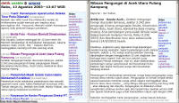
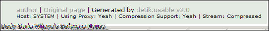

by Dody Suria Wijaya's Software House
Download
Baru! Detik.Usable v2.03. Download.
(19aug03)Cara Instalasi: copy n paste source-code tsb dan pasang di hosting/webserver apapun yg mendukung php. Nama file terserah, lokasi terserah, tidak ada konfigurasi lain yang harus dilakukan, dan dapat langsung jalan.
Catatan Release
Detik.Usable v2.0

Versi ini dicetus oleh Marriot Bombing (semoga para korbannya dimudahkan dalam kesulitan), karena sejak momen tsb detik.usable agak error akibat perubahan format tampilan. Fitur baru yang diperkenalkan oleh versi ini:
- Baru!
Cached News: detik.usable sekarang secara default meng-cache isi berita ke
dalam filesystem. Permintaan berita yang sama berikutnya akan mengambil dari
cache, sehingga secara dramatis mempercepat tampilan dan mengurangi beban CPU
karena isi cache sudah hasil parsing yang siap tampil. Fungsi untuk
mengkosongkan cache juga disediakan.
- Auto-Update: detik.usable dapat memeriksa versi terbaru di
detik.usable
repository, dan bila lebih baru, user tinggal meng-click untuk mendownload
sekaligus meng-apply ke detik.usable pribadi user.
- Proxy Mode: semua detik.usable sekarang otomatis mampu menjadi proxy server. Data yang dikirim oleh proxy server sudah merupakan hasil parsing, dan dicompress menggunakan algoritma GZip, sehingga dapat secara signifikan mempercepat akses semua detik.usable yang menggunakan proxy server.

Configuration: Pada detik.usable client, rubah variabel $app['proxy_mode'] = TRUE, dan $app['proxy_url'] = 'http://hostname/detik.php', di mana http://hostname/detik.php mengacu pada proxy server detik.usable (proxy server tidak perlu dikonfigurasi).
- Ads Display: berita di detik.com disupport oleh iklan. untuk lebih fair, link-link iklan di detik.com juga ditampilkan di detik.usable.
Configuration: rubah variabel $app['ads'] = FALSE untuk mematikan ads.
- Arrayized Data: semua data berita hasil parsing dimasukkan dalam array $news. Sehingga mudah diberi tambahan feature oleh siapapun, misal menampilkan dalam XML, send-by-email, send-by-sms, dan behaviour2 baru lain. Cukup dengan memanipulasi looping dari variabel $news.
Features and Bug Fixes
- 14aug03: (1) Penggunaan fungsi gzcompress/uncompress sekarang memeriksa
dukungan zlib lebih dulu (Thx
henry@tokogunungagung.com), dan bila tidak dukung, request data ke Proxy
diminta tdk dicompressed. (2) Bug ads view pada Proxy Mode. (3) Informasi
Proxy Mode, kompresi stream input, dan username hosting, pada footer. (4)
Link berita terkait sekarang juga membuka di Detik.Usable. (5) Auto-update,
detik.usable dapat memeriksa versi terbaru, dan bila ada, bisa langsung
meng-apply ke detik.usable anda.

Lisensi
Semua software dan source code detik.usable milik umum (Public
Domain).
Termin Penggunaan
Penggunaan dari detik.usable diatur oleh hak-hak kekayaan intelektual yang dimiliki oleh detik.com, sedemikian rupa sehingga, pengguna detik.usable diharuskan untuk tidak menggunakan software ini kecuali untuk keperluan pribadi.
Kami tidak bertanggung jawab pada masalah-masalah yang mungkin timbul di masa datang akibat dari penggunaan detik.usable.
Surat peringatan dari Detikcom
{kind=link}